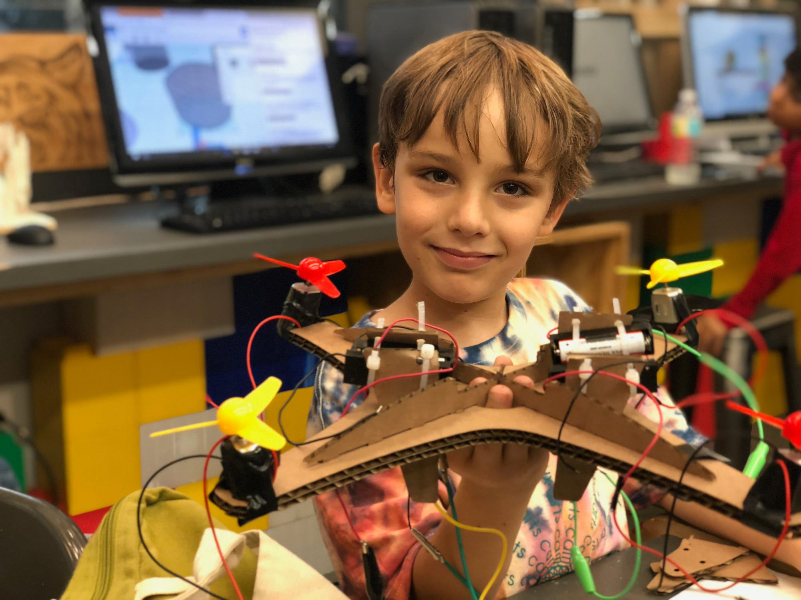

Maker Faire Miami is a celebration of the people, tools, and technologies that are creating and reinventing the city. It's a day to see the entire spectrum of creative energy that is pushing our city forward towards a better future. Be it a new civic project by professionals, a university research initiative, or the casual hobbyist just showing off some new skills - it's a forum for sharing, learning, and creating new things.
After five years the Maker Faire has grown from a Mini Maker Faire in The Lab Miami to a fantastic international event at Miami Dade College and is one of the top featured Maker Faires of over several hundred across the United States and the world. This achievement is a testament to all of the hard work Ric and the team at MANO have done to date.
As the Faire continues to grow and develop, I am proud to take on the role as one of the Producers and help lead the next five years. I decided to take on this opportunity because I see how the Maker Faire, and our local maker community, can play a vital part in shaping a more resilient, inclusive, and prosperous Miami.
Why is maker culture important?
Because makers come in all types and styles - they may be inventors, builders, designers, musicians, coders, cooks, etc. but they all share some core values: They are resourceful, lifelong learners, collaborative, problem solvers, and think systemically. These are the skills that will prepare us for a future with so many variables.
That is why many companies have begun to prioritize STEAM (Science Technology Engineering Arts and Mathematics) fields to train their staff - and why STEAM professions are often among the highest paid salaries on average.
The Next Chapter
My focus in this next chapter for Maker Faire Miami is to spread the maker mindset across the city and to empower people and organizations across South Florida with the resources they need to join the movement. This starts with the students.
I have already been hard at work putting together a team that represents a cross-section of these STEAM disciplines to bring their knowledge and expertise to the classrooms and inspire our next generation of Makers. Students will learn valuable skills through hands-on projects, real-world challenges, and with the latest technologies.
For high school and college students, we will host meetups and workshops that create informal learning environments where skills can be shared, and projects can flourish collaboratively. For professionals, we will work on building public/private partnerships that include the community in the process for solving some of our cities biggest challenges like sea level rise, transportation, affordable housing, and sustainable urban agriculture.
So this is an open call to all creators - to the teachers, students, and professionals who want to learn, share and collaborate. Showcase your work at Maker Faire Miami.
Join me on this mission to spread the maker movement and to build the future of South Florida we all wish to see.
Mario Cruz
Co Producer, Maker Faire Miami
miami.makerfaire.com
Related
-
The Future of Work Isn't Robots. It's Makers.
The NSF-funded program built around this same belief.
-
Producer in Residence at Maker Faire Bay Area
7,500 students reached on the Make: Live Stage.